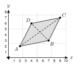

4.4 - Quadrilaterals and Their Properties
A builder frames a wall. How can she be sure the frame has square corners? She measures both diagonals. If they are the same length, the frame is a rectangle.
A rectangle is one kind of quadrilateral. In this lesson you learn the family of quadrilaterals and what is always true about each one.
quadrilateral, parallelogram, rectangle, rhombus, square, trapezoid, isosceles trapezoid, midsegment of a trapezoid, kite, consecutive angles, diagonal
Printable Guided Notes for this lesson (fill-in notes to print and write on)
🔥 Warm Up
Three angles of a quadrilateral are \(90^\circ\), \(80^\circ\), and \(100^\circ\). Find the fourth angle.
Find the midpoint of \((1, 2)\) and \((7, 6)\).
Solve \(2x + 10 = 4x - 6\).
👥 Learn Together
4.4.1 - The Quadrilateral Family
- A quadrilateral has 4 sides. Its 4 angles add to \(360^\circ\).
- Trapezoid: exactly one pair of parallel sides. Kite: two pairs of congruent sides that are next to each other.
- Parallelogram: both pairs of opposite sides are parallel.
- Rectangle: a parallelogram with 4 right angles. Rhombus: a parallelogram with 4 congruent sides.
- Square: a rectangle and a rhombus. It has 4 right angles and 4 congruent sides.
Example 1: Name the shape
Give the most specific name for each quadrilateral.
Four congruent sides and four right angles: square
Both pairs of opposite sides parallel, four right angles, sides not all equal: rectangle
Exactly one pair of parallel sides: trapezoid
Four congruent sides, angles not right angles: rhombus
A quadrilateral has two pairs of congruent sides that are next to each other. The opposite sides are not congruent. What is it?
Is every square a rectangle? Use the family tree.
A kite.
Yes. A square is below rectangle on the tree. It has 4 right angles.
4.4.2 - Parallelograms
- Opposite sides of a parallelogram are congruent.
- Opposite angles are congruent.
- Consecutive angles (angles next to each other) are supplementary. They add to \(180^\circ\).
- The diagonals bisect each other. They meet at the midpoint of each diagonal.
- The converse works too: if the diagonals of a quadrilateral bisect each other, it is a parallelogram.
Example 2: Find \(x\) and \(y\)

In parallelogram \(ABCD\), \(AB = 2x + 3\), \(CD = 4x - 9\), \(m\angle A = (5y - 10)^\circ\), and \(m\angle C = 70^\circ\). Find \(x\), \(y\), and \(m\angle B\).
Opposite sides are equal: \(2x + 3 = 4x - 9\). So \(12 = 2x\) and $x = $ 6.
Opposite angles are equal: \(5y - 10 = 70\). So \(5y = 80\) and $y = $ 16.
\(\angle B\) and \(\angle A\) are consecutive: $mB = 180 - 70 = $ \(110^\circ\).
Example 3: Check the diagonals with coordinates

\(A(2, 2)\), \(B(7, 3)\), \(C(9, 7)\), \(D(4, 6)\). Show that \(ABCD\) is a parallelogram.
Midpoint of \(\overline{AC}\): $(, ) = $ \((5.5, 4.5)\)
Midpoint of \(\overline{BD}\): $(, ) = $ \((5.5, 4.5)\)
The diagonals have the same midpoint, so they bisect each other. \(ABCD\) is a parallelogram.
Midpoint of \(\overline{EG}\): \((3.5, 2.5)\). Midpoint of \(\overline{FH}\): \((3.5, 2.5)\). They match, so yes.
A car jack and the arms of a desk lamp are parallelograms. As the arms move, opposite sides stay parallel and the same length. The top stays level.
4.4.3 - Rectangles, Rhombuses, and Squares
- A rectangle has all the properties of a parallelogram. Its diagonals are congruent.
- A rhombus has all the properties of a parallelogram. Its diagonals are perpendicular, and each diagonal bisects a pair of opposite angles.
- A square has all of these properties. Its diagonals are congruent and perpendicular.
Example 4: Rectangle diagonals

\(ABCD\) is a rectangle. \(AC = 3x + 2\) and \(BD = 5x - 12\). Find \(x\) and \(AC\).
The diagonals of a rectangle are congruent: \(3x + 2 = 5x - 12\).
\(14 = 2x\), so $x = $ 7.
$AC = 3(7) + 2 = $ 23
Example 5: Rhombus angles

\(ABCD\) is a rhombus. \(m\angle CAB = 28^\circ\). Find \(m\angle DAB\), \(m\angle ABC\), and \(m\angle AEB\).
Diagonal \(\overline{AC}\) bisects \(\angle DAB\): $mDAB = 2(28) = $ \(56^\circ\).
Consecutive angles add to \(180^\circ\): $mABC = 180 - 56 = $ \(124^\circ\).
The diagonals are perpendicular: $mAEB = $ \(90^\circ\).
Rectangle \(PQRS\) has diagonal \(PR = 18\). Find \(QS\).
The diagonals of a rhombus cross at \(E\). Find \(m\angle AEB\).
\(QS = 18\). The diagonals of a rectangle are congruent.
\(90^\circ\). The diagonals of a rhombus are perpendicular.
A builder measures both diagonals of a frame. If the opposite sides match and the diagonals match, the frame is a rectangle. The corners are square.
4.4.4 - Trapezoids and Kites
- A trapezoid has one pair of parallel sides, the bases. The other two sides are the legs.
- The midsegment of a trapezoid connects the midpoints of the legs. It is parallel to the bases. Its length is the average of the bases: \(\dfrac{b_1 + b_2}{2}\).
- Isosceles trapezoid: the legs are congruent. Each pair of base angles is congruent. The diagonals are congruent.
- Kite: the diagonals are perpendicular. One pair of opposite angles is congruent (the angles between the unequal sides).
Example 6: Midsegment
The bases of a trapezoid are 12 and 28. The midsegment is \((3x + 5)\). Find \(x\).
Midsegment $= = $ 20.
\(3x + 5 = 20\), so \(3x = 15\) and $x = $ 5.
Example 7: Isosceles trapezoid

\(ABCD\) is an isosceles trapezoid with \(\overline{AB} \parallel \overline{DC}\). \(m\angle D = 70^\circ\). Find \(m\angle C\), \(m\angle A\), and \(m\angle B\).
Base angles are congruent: $mC = $ \(70^\circ\).
\(\angle A\) and \(\angle D\) are consecutive angles between parallel lines: $mA = 180 - 70 = $ \(110^\circ\).
$mB = $ \(110^\circ\)
Example 8: Kite

\(ABCD\) is a kite. \(AB = AD\) and \(CB = CD\). \(m\angle A = 80^\circ\) and \(m\angle B = 110^\circ\). Find \(m\angle D\) and \(m\angle C\).
The angles between the unequal sides are congruent: $mD = $ \(110^\circ\).
The four angles add to \(360^\circ\): $mC = 360 - 80 - 110 - 110 = $ \(60^\circ\).
\(m\angle S = 100^\circ\). \(m\angle R = 360 - 70 - 100 - 100 = 90^\circ\).
4.4.5 - Always, Sometimes, or Never?
- A shape is always a member of every group above it on the family tree.
- To show a statement is not always true, find a counterexample: one example where it fails.
- Use one of the four ways to justify: a drawing to scale, a coordinate check, a counterexample, or a mark on a figure.
Example 9: Decide and explain
A square is a rectangle. Always. A square has 4 right angles and opposite sides parallel.
A rectangle is a rhombus. Sometimes. A rectangle 2 by 5 is a counterexample: the sides are not all equal. A square is a rectangle that is also a rhombus.
A trapezoid is a parallelogram. Never. A trapezoid has exactly one pair of parallel sides. A parallelogram has two.
- A rhombus is a square. Always, sometimes, or never? Explain.
- Sometimes. A rhombus with angles \(60^\circ\) and \(120^\circ\) is a counterexample. It has no right angles.
✍️ Practice On Your Own
Give the most specific name.
Four sides, exactly one pair of parallel sides.
Both pairs of opposite sides parallel, four right angles, sides not all equal.
Four congruent sides and no right angles.
Two pairs of congruent adjacent sides, opposite sides not congruent.
Four congruent sides and four right angles.
Use the figure for problems 6 to 8. \(PQRS\) is a parallelogram.

Find \(x\) and \(PQ\).
Find \(y\).
Find \(m\angle Q\).
More parallelograms.
The diagonals of parallelogram \(ABCD\) meet at \(E\). \(AE = 3x + 1\) and \(EC = 5x - 9\). Find \(x\) and \(AC\).
\(J(1, 1)\), \(K(5, 2)\), \(L(8, 6)\), \(M(4, 5)\). Is \(JKLM\) a parallelogram? Use the diagonals.
\(W(0, 0)\), \(X(6, 1)\), \(Y(8, 5)\), \(Z(1, 4)\). Is \(WXYZ\) a parallelogram? Use the diagonals.
Rectangles, rhombuses, and squares.
\(ABCD\) is a rectangle. \(AC = 4x - 3\) and \(BD = 2x + 15\). Find \(x\) and \(AC\).
\(ABCD\) is a rhombus. \(m\angle ABC = 72^\circ\). Find \(m\angle BCD\) and \(m\angle CBD\).
The diagonals of a rhombus are 12 and 16. They cross at right angles and bisect each other. Find the side length.
A frame is 12 feet by 5 feet. Both diagonals measure 13 feet. Is the corner square? Check with the Pythagorean theorem.
Trapezoids and kites.
The bases of a trapezoid are 18 and 30. Find the midsegment.
The bases of a trapezoid are \((x + 10)\) and \((3x - 2)\). The midsegment is 14. Find \(x\) and the bases.
\(ABCD\) is an isosceles trapezoid with \(\overline{AB} \parallel \overline{DC}\). \(m\angle D = 65^\circ\). Find \(m\angle C\), \(m\angle A\), and \(m\angle B\).
Kite \(ABCD\) has \(AB = AD\) and \(CB = CD\). \(m\angle A = 100^\circ\) and \(m\angle B = 70^\circ\). Find \(m\angle C\).
Always, sometimes, or never? Explain.
A rectangle is a parallelogram.
A rhombus is a square.
A trapezoid is a parallelogram.
A kite is a rhombus.
Find the mistake with a counterexample.
Amira says any quadrilateral with congruent diagonals is a rectangle. Use \(A(0, 0)\), \(B(6, 0)\), \(C(5, 3)\), \(D(1, 3)\) to show she is wrong.
Diego says any quadrilateral with perpendicular diagonals is a rhombus. Use \(K(0, 3)\), \(L(-2, 0)\), \(M(0, -1)\), \(N(2, 0)\) to show he is wrong.
Test practice
Which statement about a rhombus is always true?
A. The diagonals are congruent.
B. The diagonals are perpendicular.
C. All four angles are right angles.
D. Exactly one pair of sides is parallel.A quadrilateral has two pairs of parallel sides and four congruent sides. Which name does NOT always describe it?
A. parallelogram
B. rhombus
C. square
D. quadrilateral
Challenge
\(A(0, 0)\), \(B(6, 0)\), \(C(8, 6)\), \(D(2, 8)\). Find the midpoints \(P\), \(Q\), \(R\), \(S\) of \(\overline{AB}\), \(\overline{BC}\), \(\overline{CD}\), \(\overline{DA}\). Show that \(PQRS\) is a parallelogram.
A rectangle has a diagonal of 13 and one side of 5. Find the other side and the area.